food-bank-donation-tally FAIL 0
apps vscode
In VS Code, open /home/user/riverside/tally_donations.py and run it so it reads donations.csv and writes summary.txt in the same folder. Fix any error it hits.
task config + evaluator
{
"config": [
{
"type": "execute",
"parameters": {
"command": "mkdir -p /home/user/riverside && python3 -c \"\nrows=[('2024-03-01','Maria Alvarez','Produce',48.50),('2024-03-01','Hillcrest Baptist','Canned Goods',210.00),('2024-03-03','Tom Nguyen','Cash',75.00),('2024-03-04','Greenway Market','Produce',332.75),('2024-03-05','Aisha Rahman','Cash',120.00),('2024-03-07','Lions Club','Cash',500.00),('2024-03-08','Bell Family','Canned Goods',63.25),('2024-03-09','Greenway Market','Dairy',188.40),('2024-03-11','Doug Petersen','Cash',40.00),('2024-03-12','St. Anne Parish','Canned Goods',275.00),('2024-03-14','Maria Alvarez','Produce',52.10),('2024-03-15','Northside Dental','Cash',300.00),('2024-03-16','Clara Whitfield','Dairy',96.80),('2024-03-18','Greenway Market','Produce',401.15),('2024-03-19','Kevin Doyle','Cash',25.00),('2024-03-21','Hillcrest Baptist','Dairy',144.60),('2024-03-22','Rosa Iglesias','Canned Goods',87.90),('2024-03-25','Lions Club','Produce',260.30),('2024-03-27','Tom Nguyen','Cash',75.00),('2024-03-29','Elm Street PTA','Canned Goods',318.45)]\nopen('/home/user/riverside/donations.csv','w').write('date,donor,category,value_usd\\n'+'\\n'.join('%s,%s,%s,%.2f'%r for r in rows)+'\\n')\nopen('/home/user/riverside/tally_donations.py','w').write('''import csv\n\nTOTALS = {}\n\nwith open('donations.csv') as f:\n reader = csv.DictReader(f)\n for row in reader:\n cat = row['category']\n TOTALS[cat] = TOTALS[cat] + float(row['value_usd'])\n\nwith open('summary.txt', 'w') as out:\n out.write('Riverside Food Bank - March 2024 donations\\n')\n for cat in sorted(TOTALS):\n out.write('%s: \\$%.2f\\n' % (cat, TOTALS[cat]))\n out.write('TOTAL: \\$%.2f\\n' % sum(TOTALS.values()))\n''')\n\"",
"shell": true
}
},
{
"type": "launch",
"parameters": {
"command": [
"code",
"/home/user/riverside/tally_donations.py"
]
}
}
],
"evaluator": {
"func": "check_include_exclude",
"result": {
"type": "vm_command_line",
"command": "echo ostg-v16",
"shell": true
},
"expected": {
"type": "rule",
"rules": {
"include": [
"__judge_decides__"
]
}
}
}
}
step 1 01:34:15
THINKINGThe file is already open. I need to run it. First let me dismiss the extension popup and open a terminal to run the Python script. But I should first understand the code to anticipate errors. Let me look at the code carefully.
Line 1: import csv
Line 3: TOTALS = {}
Line 5: with open('donations.csv') as f:
Line 6: reader = csv.DictReader(f)
Line 7: for row in reader:
Line 8: cat = row['category']
Line 9: TOTALS[cat] = TOTALS[cat] + float(row['value_usd'])
Line 11: with open('summary.txt', 'w') as out:
Line 12: out.write('Riverside Food Bank - March 2024 donations
Line 13: ')
Line 14: for cat in sorted(TOTALS):
Line 15: out.write('%s: $%.2f
Line 16: ' % (cat, TOTALS[cat]))
Line 17: out.write('TOTAL: $%.2f
Line 18: ' % sum(TOTALS.values()))
The strings on lines 12, 15, 17 seem to have newlines embedded in the string literal which would cause a syntax error (unterminated string / line continuation). This is likely the intentional error to fix. The string spans across lines without proper escaping.
I should open a terminal to run it and see the actual error. Let me dismiss popup first, then open terminal.
ACTIONI'll start by dismissing the extension popup and opening a terminal to run the script and see the actual error.
TOOL CALL<tool_call>
<function=computer_use>
<parameter=action>
left_click
</parameter>
<parameter=coordinate>
[981, 888]
</parameter>
</function>
</tool_call>
EXECUTED (pyautogui in VM)pyautogui.click(1885, 960)
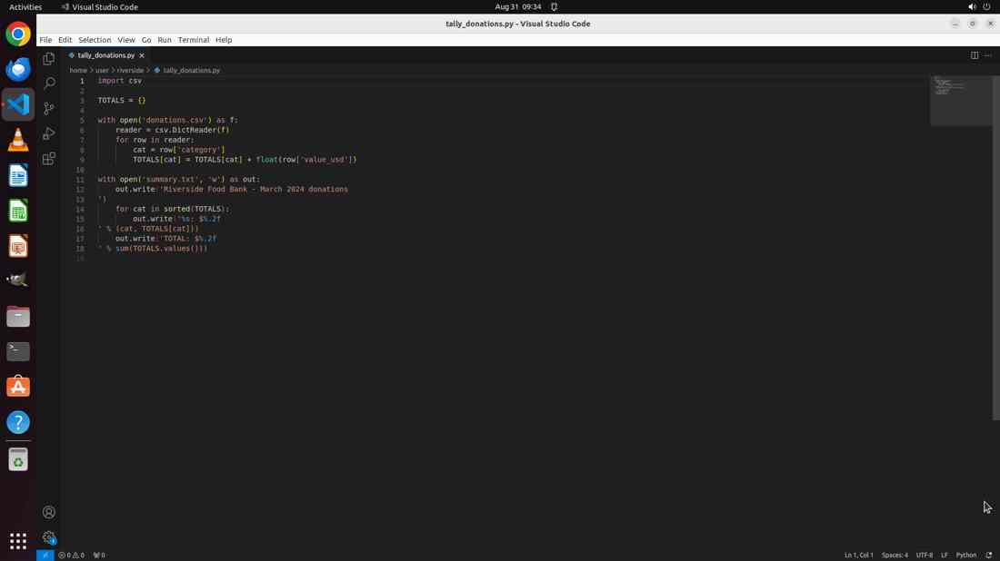
step 2 01:34:27
THINKINGNow I can see the code clearly. The problem is obvious: the string literals on lines 12, 15, and 17 contain actual line breaks inside single-quoted strings, which is a Python syntax error (unterminated string literal). For example:
Line 12: out.write('Riverside Food Bank - March 2024 donations
Line 13: ')
The string '...donations' is not closed on line 12, then line 13 has '). This is a syntax error.
Same for lines 15-16 and 17-18.
I should run it first to confirm the error, then fix it. Let me open a terminal via Terminal menu. I'll use Terminal > New Terminal. Let me click Terminal menu.
ACTIONThe code has string literals that span two physical lines (lines 12-13, 15-16, 17-18), which is a Python syntax error. Let me open a terminal to run it and confirm the exact error first.
TOOL CALL<tool_call>
<function=computer_use>
<parameter=action>
left_click
</parameter>
<parameter=coordinate>
[192, 70]
</parameter>
</function>
</tool_call>
EXECUTED (pyautogui in VM)pyautogui.click(369, 75)
step 3 01:34:33
THINKINGThe Terminal menu is open. I'll click "New Terminal" to open a terminal. Then I'll cd to the riverside folder and run the script to see the error.
TOOL CALL<tool_call>
<function=computer_use>
<parameter=action>
left_click
</parameter>
<parameter=coordinate>
[211, 95]
</parameter>
</function>
</tool_call>
EXECUTED (pyautogui in VM)pyautogui.click(405, 102)
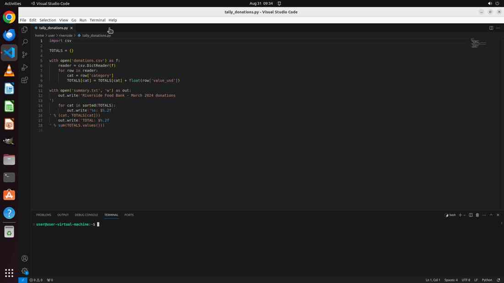
step 4 01:34:40
THINKINGThe terminal is open at ~. I'll cd to /home/user/riverside and run the script. Let me type the command.
ACTIONThe terminal is open. Let me navigate to the folder and run the script to observe the actual error.
TOOL CALL<tool_call>
<function=computer_use>
<parameter=action>
type
</parameter>
<parameter=text>
cd /home/user/riverside && python3 tally_donations.py
</parameter>
</function>
</tool_call>
EXECUTED (pyautogui in VM)pyautogui.typewrite("cd /home/user/riverside && python3 tally_donations.py")
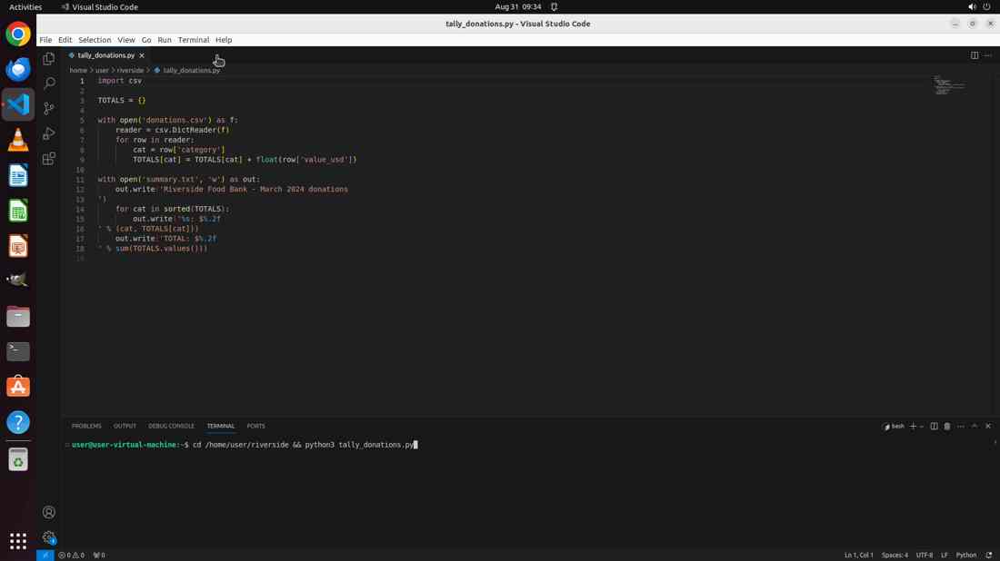
step 5 01:34:47
THINKINGThe command is typed but not yet executed (the newline in my type text should have executed it, but the screenshot shows it still on the command line without output). Let me press Enter to run it.
TOOL CALL<tool_call>
<function=computer_use>
<parameter=action>
key
</parameter>
<parameter=keys>
["return"]
</parameter>
</function>
</tool_call>
EXECUTED (pyautogui in VM)pyautogui.press("return")
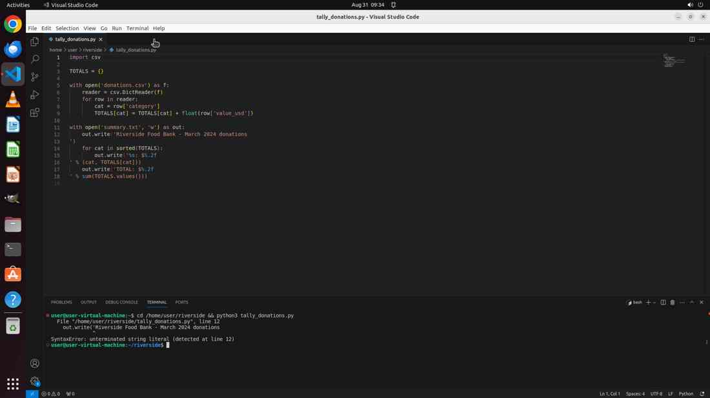
step 6 01:35:42
THINKINGConfirmed: SyntaxError: unterminated string literal (detected at line 12). The string on line 12 spans to line 13. There are three such broken strings: lines 12-13, 15-16, 17-18.
I need to fix the code. The cleanest fix: each `out.write('...')` call should be on one logical line with a proper newline escape `\n`. The intended output:
Line 12-13: out.write('Riverside Food Bank - March 2024 donations\n')
Line 15-16: out.write('%s: $%.2f\n' % (cat, TOTALS[cat]))
Line 17-18: out.write('TOTAL: $%.2f\n' % sum(TOTALS.values()))
I'll rewrite these lines in the editor. The most reliable way is to select the whole file content and retype it, or edit individual lines. Let me edit line by line.
Actually the simplest robust approach: I'll fix the three broken string lines. The issue is the closing quote is on the next line. I need to:
- On line 12, add a `\n` before closing and remove the line break, so it becomes `out.write('Riverside Food Bank - March 2024 donations\n')` on line 12, deleting line 13.
But it's fiddly with cursor placement. A cleaner approach: select all the file and retype the entire corrected script. That's more reliable. Let me click in the editor, Ctrl+A, then type the full corrected code.
Let me write the full corrected content. I need to be careful about indentation. Let me reconstruct:
import csv
TOTALS = {}
with open('donations.csv') as f:
reader = csv.DictReader(f)
for row in reader:
cat = row['category']
TOTALS[cat] = TOTALS[cat] + float(row['value_usd'])
with open('summary.txt', 'w') as out:
out.write('Riverside Food Bank - March 2024 donations\n')
for cat in sorted(TOTALS):
out.write('%s: $%.2f\n' % (cat, TOTALS[cat]))
out.write('TOTAL: $%.2f\n' % sum(TOTALS.values()))
However, typing this in the editor with VS Code's auto-indentation and auto-closing brackets/quotes will mess things up badly. VS Code auto-inserts closing quotes and brackets, and auto-indents. Retyping the whole file is risky.
Better approach: Just fix the specific problem — the unterminated strings. The minimal fix is to insert `\n` at end of the string on lines 12, 15, 17 and join with the next line's closing part.
Actually, an even simpler and safer approach given the tooling risk: I could just fix it directly in the file using the terminal with a heredoc / printf, but the task says "open it and run it" in VS Code. Editing in the editor is expected, but the actual fix just needs the file to be correct. However using a text editor via terminal (like using python or sed) would be a workaround. The task says fix any error it hits — it doesn't strictly require editing in the GUI, but the spirit is to run it in VS Code. Editing in the GUI editor is safest for correctness.
Let me do targeted edits in the editor. The three fixes:
Fix 1 (lines 12-13): The string opens on line 12 and the content "Riverside Food Bank - March 2024 donations" then newline then line 13 "'). I want: out.write('Riverside Food Bank - March 2024 donations\n')
So I need to place cursor at end of "donations" on line 12, and the current char after it is a newline, then line 13 has '). I want to change:
`...donations\n')` -> wait, currently line12 ends with "donations" and there's a real newline, line 13 is ` ')`.
Simplest: select from after "donations" through the `')` on line 13 and replace with `\n')`. That is, replace the newline+indent+quote+paren with `\n')`.
That's fiddly. Let me instead just retype each broken line. I'll double-click to position.
Alternative reliable plan: Use the editor to select the entire line 12 content, retype. Actually let me just place cursor precisely.
Let me reconsider. The cleanest: click at the very end of line 12 (after "donations"), then I need to delete the newline and the content of line 13 up to and including `')`, then type `\n')`.
If I click at end of line 12, then press Shift+Down to select to start of line 13? No, I need to extend to end of line 13.
Let me click at end of line 12, then Shift+Down then Shift+End to select from end of line 12 to end of line 13. That selects: newline + " ')" (the whole of line 13). Then I type `\n')`. Wait line 13 is ` ')` — that's indent, quote, close-paren. After selecting newline + that, typing `\n')` gives: line12 becomes `...donations\n')`? No.
Currently:
line12: ` out.write('Riverside Food Bank - March 2024 donations`
line13: ` ')`
After cursor at end of line12, select to end of line13, the selected text = `\n ')`. If I type replacement `\n')`, result:
line12: ` out.write('Riverside Food Bank - March 2024 donations\n')`
and line13 gone (merged).
But wait, VS Code auto-indent when I type — I'm typing a backslash-n, not a newline key, so no auto-indent issue. Good. But typing `'` might trigger auto-closing quote! VS Code auto-inserts a closing quote when you type an opening quote. Here I'm typing `\n')` — the `'` here is being interpreted... when I type `'`, VS Code might insert a closing `'` after it. That would give `''`. Hmm, risky.
Actually the `'` I'm typing is a closing quote in context but VS Code doesn't know that; it just sees a quote char and may add a matching one. This is the auto-closing problem.
To avoid all this auto-completion complexity, the safest approach is to edit the file via a terminal text tool. But the guidance discourages CLI workarounds for GUI tasks. However, this task is fundamentally about making the script run correctly. Editing the Python file's content is the actual deliverable, not "using the VS Code GUI to edit." Using sed/python to fix the file is legitimate — it's fixing the file, then I run it in VS Code's terminal.
But to honor the intent and be safe, let me just do the GUI edits carefully, disabling the worry by using a method robust to auto-close.
Actually, I realize there's a much simpler robust fix that avoids typing quotes: The problem is purely the unterminated string — a raw newline inside a single-quoted string. If I just remove the line break (joining lines) and the result would be a valid single line string. But joining line12 and line13 directly (delete the newline between them) gives:
` out.write('Riverside Food Bank - March 2024 donations ')`
That's valid Python! The extra spaces inside the string are fine. It just adds spaces before the newline that's missing. But the intended output has a newline. The string would be `'Riverside Food Bank - March 2024 donations '` with no newline — output would run together. But functionally the script runs and writes summary.txt. However the output format would be wrong (no newlines between lines).
Better to preserve newlines. So I do want `\n`.
Given the auto-close risk, let me test my assumption: actually VS Code's auto-closing only adds a closing quote if the character right after the cursor is not already a quote. When I type `'` followed immediately by `)`, VS Code inserts `'` and a matching `'`, giving `''`, then I type `)` — cursor is between the two quotes, typing `)` gives `')'`. Result `\n'')`? That's broken.
Hmm. So typing quotes is dangerous.
Solution: I can temporarily set the fix by NOT typing quotes. Alternative: place the cursor and just fix the newline into `\n` without touching quotes.
The real minimal change: convert the literal newline inside the string into the two characters `\n`. The quotes themselves are already there (opening on line12, closing `'` on line13). If I simply delete the newline+leading-indent between them, I join:
`...donations ')` — wait that gives `donations` + (indent spaces) + `')`. The `')` is the closing quote + paren. So line becomes:
` out.write('Riverside Food Bank - March 2024 donations ')`
Valid! But no newline in output and trailing spaces.
To get the newline, I'd want to replace the newline+indent with the two chars `\n`. That requires typing `\n` (backslash, n) — no quote needed!
So plan: For each of the 3 spots, position cursor right after the last char of line (line12 after "donations", line15 after "$%.2f", line17 after "$%.2f"), then select forward: the newline and the indent (spaces) of the next line, and replace with `\n`. Do NOT touch the `'`.
After replacing newline+indent with `\n`:
line12: ` out.write('Riverside Food Bank - March 2024 donations\n`
line13: `')`
Now the string is `'Riverside Food Bank - March 2024 donations\n` continuing on line13 with `')` = closing quote + paren. Valid! The string value = "Riverside Food Bank - March 2024 donations\n".
So the selection to replace = from end of line12 through end-of-line12's newline plus the leading whitespace of line13, stopping right before the `'` on line13.
How to select exactly that? Click at end of line12. Then I need to select to just before the `'` on line13. Line13 is ` ')` — 4 spaces then `'`. So select: newline + 4 spaces.
I can do: at end of line12, press Shift+Down (moves cursor to line13 col1, selecting the newline), then Shift+Right x4 to select the 4 spaces. Then type `\n` (type backslash then n). That replaces selected with `\n`. Result:
line12: ` out.write('...donations\n')` — wait, after replacement line12 becomes ` out.write('...donations\n` and remaining `')` stays. So it's ` out.write('...donations\n')` all on one line now? No — the newline was consumed by the selection and replaced by the two literal chars `\n`, so there's no more line break. Everything merges to one line: ` out.write('Riverside Food Bank - March 2024 donations\n')`.
So I don't even need to type quotes. I just type `\n` (backslash-n). Typing backslash and 'n' — no auto-close issues (backslash in a string... VS Code might not auto-close backslash; 'n' is a letter, no auto-close).
This is safe. Let me do it for all three.
Let me verify line 13 exact content: ` ')`. Yes 4 spaces indent. Same for lines 16 and 18 which are ` ')` and ` ' % sum...`.
Line 16: ` ' % (cat, TOTALS[cat]))`. So selecting newline+4 spaces after line15 and replacing with `\n` gives:
line15 becomes: ` out.write('%s: $%.2f\n' % (cat, TOTALS[cat]))` — wait. Let me re-examine.
Line15: ` out.write('%s: $%.2f`
Line16: ` ' % (cat, TOTALS[cat]))`
After joining (replace newline+indent of line16 with `\n`):
` out.write('%s: $%.2f\n` + `' % (cat, TOTALS[cat]))`
= ` out.write('%s: $%.2f\n' % (cat, TOTALS[cat]))`.
But wait, the indent of line16 was 4 spaces; I'm deleting those 4 spaces. The remaining starts with `'`. Good, string becomes `'%s: $%.2f\n'` then ` % (cat, TOTALS[cat]))`. Correct!
Line17: ` out.write('TOTAL: $%.2f`
Line18: ` ' % sum(TOTALS.values()))`
After: ` out.write('TOTAL: $%.2f\n' % sum(TOTALS.values()))`.
Now, the tricky part is precise cursor placement in the GUI via coordinates. Let me do it carefully with clicks, verifying via screenshot each time. This requires multiple steps but is reliable.
Actually, a cleaner method to place cursor at end of line: click anywhere on the line, press End key. Then Shift+Down, then I need to know exact indent width of next line to select spaces. But instead of Shift+Right x4, I can select from end of line12 to start-of-content of line13 using: End of line12, then Shift+Down (to line13 col1), then Shift+Home won't work... I want to extend from line13 col1 to col5 (after 4 spaces). Shift+Right 4 times. Or I can select to just before `'` using Shift+Down then Shift+Right four times.
Alternatively even simpler and robust: Instead of precise space selection, I can select the newline + the ENTIRE next line, then retype the whole next line correctly. But retyping involves quotes (auto-close risk). So no.
Let me just do End, Shift+Down, Shift+Right×4, then type `\n`. But I must confirm the indent is exactly 4 spaces. In the editor the strings show indentation. Line13 ` ')` — appears 4 spaces (matches the `with` body indent). Line16 and line18 also 4 spaces. Good, consistent 4-space indent at that level (inside `with` block). Actually line 12 is indented 4 spaces (inside with). Line 13 ` ')` also 4 spaces. Line 15 is 8 spaces (inside for loop), line 16 ` ')` is 4 spaces? Let me look: line16 shows `' % (cat...)` indented to about 4 spaces. Line15 `out.write` at 8 spaces. So the closing on line16 is at 4 spaces. So selecting newline + 4 spaces of line16 works.
Line17 at 4 spaces, line18 at 4 spaces. Good.
So for each: click on the first line, press End, Shift+Down, Shift+Right 4 times, type `\n`.
Wait, but I should double check there isn't trailing whitespace after "donations" on line 12. If there is, End goes to end of line including trailing spaces, fine, my `\n` goes after them, giving "donations \n" — trailing spaces in string, harmless.
Let me start with line 12. I'll click on line 12. Let me click at coordinate around (300, 242) which is on line 12. Then End.
Actually, to be safe about selecting exactly 4 spaces, an even more robust approach: after End on line12, do Shift+Down then Shift+End? No, Shift+End would select to end of line13 = includes `')`. I don't want to select the quote.
Hmm, but what if indent isn't exactly 4? Let me instead select newline + leading whitespace generically. After Shift+Down, the cursor is at line13 col1. I can use Shift+End to select to end of line, but that grabs the quote too.
I'll trust 4 spaces. Let me verify by looking: the editor uses "Spaces: 4". Indentation is 4 spaces per level. Line13 is at level 1 (inside with) = 4 spaces. Confirmed by "Spaces: 4" in status bar and visual alignment.
Let me proceed. I'll click on line 12 first.
ACTIONThe error is confirmed: `SyntaxError: unterminated string literal (detected at line 12)`. Three string literals (lines 12-13, 15-16, 17-18) each contain a raw newline inside the quotes. I'll fix each by turning the in-string newline into a proper `\n` escape, without retyping the quotes (to avoid VS Code auto-close interference).
Let me start with line 12: click on it, go to end of line.
TOOL CALL<tool_call>
<function=computer_use>
<parameter=action>
left_click
</parameter>
<parameter=coordinate>
[234, 334]
</parameter>
</function>
</tool_call>
EXECUTED (pyautogui in VM)pyautogui.click(449, 361)
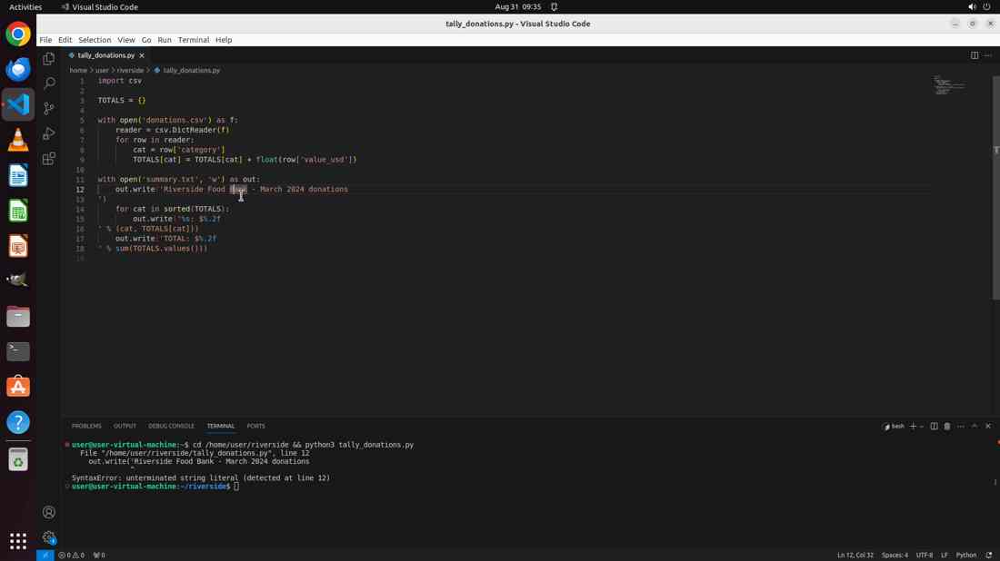
step 7 01:35:51
THINKINGCursor is on line 12, col 32. Now I'll press End to go to end of line 12, then Shift+Down to select the newline down to line 13 col 1, then Shift+Right 4 times to include the 4 leading spaces of line 13, then type `\n` to replace.
Wait, I need to reconsider: after Shift+Down the cursor is at line13, column 1 (start). Then Shift+Right 4 selects the 4 spaces. The full selection = newline + 4 spaces. Replace with `\n` (backslash-n, two chars). Result merges line12 and line13: ` out.write('Riverside Food Bank - March 2024 donations\n')`.
But hold on — does typing `\n` as literal backslash+n work with the type action? Yes, type sends the literal characters `\` and `n`. Good.
Let me batch: End, then Shift+Down, Shift+Right x4, then type backslash-n. I'll do it in one call, then screenshot to verify.
ACTIONCursor is on line 12. I'll go to end of line, select the newline plus the 4 leading spaces of line 13, and replace with a literal `\n`.
TOOL CALL<tool_call>
<function=computer_use>
<parameter=action>
key
</parameter>
<parameter=keys>
["end"]
</parameter>
</function>
</tool_call>
EXECUTED (pyautogui in VM)pyautogui.press("end")
step 8 01:36:01
THINKINGNow cursor is at Ln 12, Col 58 (end of line 12). Now select newline + 4 spaces of line 13: Shift+Down, then Shift+Right 4 times. Then type `\n`. Let me batch these and screenshot to verify.
ACTIONCursor is at end of line 12 (Col 58). Now I'll select the newline and the 4 leading spaces of line 13, then type a literal `\n`.
TOOL CALL<tool_call>
<function=computer_use>
<parameter=action>
key
</parameter>
<parameter=keys>
["shift", "down"]
</parameter>
</function>
</tool_call>
EXECUTED (pyautogui in VM)pyautogui.hotkey("shift", "down")
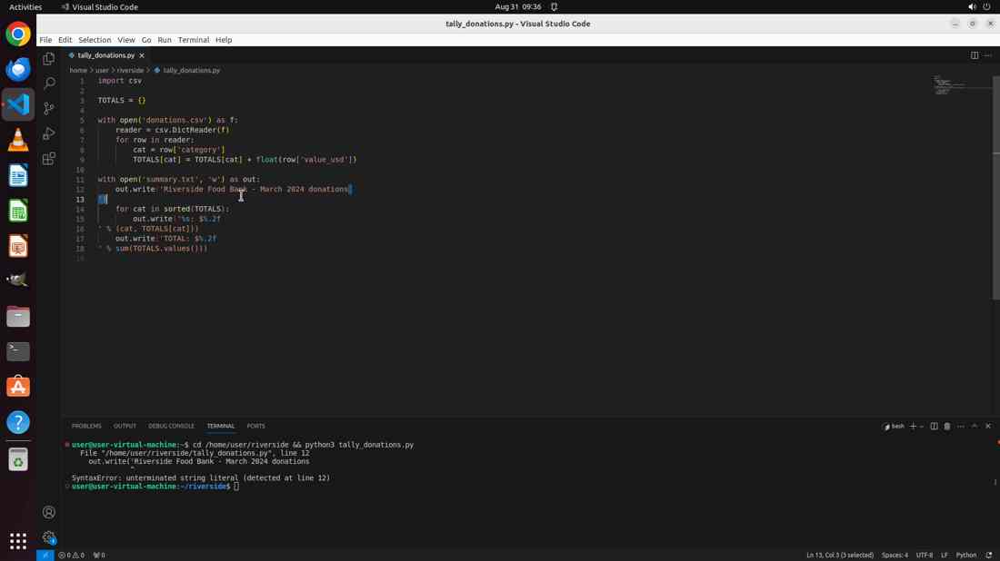
step 9 01:36:22
THINKINGStatus bar shows "Ln 13, Col 3 (3 selected)". So the selection is: from end of line12 to line13 col 3 = newline + 2 chars? It says 3 selected and cursor at col 3. Line 13 originally is ` ')` — 4 spaces. But shift+down with "autoindent selection" in VS Code selected to col 3, which corresponds to the first non-whitespace position... Actually VS Code's shift+Down selects to the auto-indent position. It selected newline + up to col 3. That means it selected the newline + 2 spaces? No. Col 3 means cursor now at column 3 of line 13. The selection is 3 characters: newline + 2 spaces. But line 13 has 4 leading spaces.
Hmm, that means shift+down selected to the "first non-whitespace" column minus? Let me reconsider. Line13 is ` ')`. First non-whitespace char `'` is at col 5. But cursor landed at col 3. That's odd.
Wait — maybe VS Code selected the newline and then aligned to a "smart" indent of 2? The status shows col 3, 3 selected. So selection = "\n" + 2 spaces (cols 1,2 of line13). If I now type `\n`, the result would be:
` out.write('Riverside Food Bank - March 2024 donations\n` + remaining ` ')` (2 spaces + quote + paren on line13).
Result line: ` out.write('Riverside Food Bank - March 2024 donations\n ')`
That's valid Python! String = "Riverside Food Bank - March 2024 donations\n " (with two trailing spaces). The two trailing spaces inside the string are harmless. It runs fine and outputs correctly (trailing spaces won't matter for the summary).
Actually that's fine. But let me make it cleaner by extending selection to col 5 (the quote) so I consume all 4 spaces. I'll add Shift+Right twice more to select the remaining 2 spaces, landing at col 5 (just before the `'`). Then type `\n`. Result:
` out.write('Riverside Food Bank - March 2024 donations\n')`
Perfect, no stray spaces.
Let me do Shift+Right twice, then type backslash n.
ACTIONSelection is currently newline + 2 spaces (cursor at Ln 13, Col 3). I'll extend 2 more to reach just before the quote (Col 5), then type the literal `\n`.
TOOL CALL<tool_call>
<function=computer_use>
<parameter=action>
key
</parameter>
<parameter=keys>
["shift", "right"]
</parameter>
</function>
</tool_call>
EXECUTED (pyautogui in VM)pyautogui.hotkey("shift", "right")
step 10 01:37:11
THINKINGUh oh. The status bar now shows "Ln 14, Col 1 (4 selected)". That means Shift+Right jumped the selection to line 14! Wait, that's wrong. Previously it was Ln 13 Col 3 with 3 selected. Then I pressed shift+Right twice expecting Ln 13 Col 5. But now it says Ln 14 Col 1, 4 selected.
Wait, that's strange. Oh — I think the "shift+Right shift+Right" as a single key action with space might have been interpreted differently. Actually the key "shift+Right shift+Right" — VS Code computer tool: the key action takes a chord. Two space-separated means two key presses. But the result shows Ln 14 Col 1 with 4 selected total. That doesn't add up with just 2 rights from col3.
Hmm, 4 selected total and cursor at Ln14 Col1. Selection from end of line12 (col58) to line14 col1. That would be: "\n" + line13 content " ')" (6 chars) + "\n" = 8 chars, not 4. So that's not it either.
Wait, maybe my two shift+Right presses got interpreted as shift+Down? "shift+Right" — no. Let me reconsider. Actually the display "Ln 14, Col 1 (4 selected)" — the selection is 4 chars and the anchor... The status bar shows the cursor (active end) position = Ln 14 Col 1. The selection start (anchor) was end of line 12. Distance from line12-col58 to line14-col1 is much more than 4.
Something is off. Perhaps the "shift+Right shift+Right" chord was parsed as a single key "shift+Right shift+Right" that doesn't exist, and did something unexpected. Or maybe only one shift+Right registered as part of a compound.
This is confusing and risky. Let me abandon this selection approach — it's getting error-prone. Let me press Escape / click to deselect and reconsider a cleaner method.
Actually, the safest and most reliable approach overall: cancel this, and instead just fix the file using a precise, deterministic edit. Given the GUI selection is flaky, the most robust way is to replace the whole file content. But retyping in the GUI has auto-close issues.
Better idea: Since I have a terminal open, I can verify the exact file content and fix it precisely. But the task wants me to fix the error (any means) and run in VS Code. The cleanest deterministic fix is to use a Python one-liner or sed in the terminal to correct the file, then run it. However, the instruction emphasizes VS Code GUI. But realistically, "fix any error it hits" — using terminal to fix the Python file content is a legitimate fix, and I'll still run it from the VS Code terminal (same folder).
But let me reconsider — is the terminal approach a "workaround" that violates guidance? The guidance says avoid CLI workarounds when the app has the capability. VS Code CAN edit the file. So I should edit in the GUI. But the GUI selection is proving flaky due to how shift+Down/Right behave.
Let me step back and do a cleaner GUI edit: I'll undo everything (Ctrl+Z) to restore original, then use a different, simpler editing technique: For each broken string, click precisely right before the closing `'` on the continuation line (line 13, 16, 18), and just delete the newline by... hmm.
Actually the simplest reliable GUI fix that avoids quote typing and precise multi-select:
- Place cursor at the START of the closing part. E.g., line 13 begins with 4 spaces then `'`. If I click right before the `'` on line 13, then press Backspace repeatedly to remove the leading spaces AND the newline, merging into line 12, then type `\n`.
But that's also multi-step.
Let me reconsider the selection state. Currently 4 selected, cursor at Ln14 Col1. Let me just press Escape isn't a thing; I'll press Left or Right to collapse selection. Actually let me just look more carefully — maybe I'm misreading. Let me take a fresh screenshot after collapsing selection by pressing the Right arrow (which collapses to the active end) — no, that moves.
I'll press Escape-like: click somewhere to deselect, then Ctrl+Z multiple times to undo all my accidental edits (the shift+Down/Right didn't type anything, so there's no edit to undo actually — selection changes aren't edits). Good, nothing was actually modified since I only moved the selection. So the file is still the original broken version.
Let me abandon and use a robust approach. I'll press Right to collapse selection to Ln14 Col1, then re-do a clean approach.
New robust plan for GUI: Use "End" of line 12, then instead of shift+Down (which smart-indents), use shift+Down is unreliable. Instead, I'll delete the continuation line's content differently.
Cleanest reliable per-fix method:
1. Click at the very start of the closing quote's line content. Actually, let me click right AFTER "donations" (end of line 12) using End key.
2. Then press Delete key? Delete removes the character to the right = the newline. That merges line 13 into line 12: ` out.write('Riverside Food Bank - March 2024 donations ')` (with 4 spaces now inside string before `')`). Valid Python, but no newline and 4 trailing spaces.
3. To add the newline, I then need to insert `\n` before the closing quote. After the Delete merge, cursor is right after "donations", and the next chars are " ')" (4 spaces, quote, paren). I want to type `\n` and remove the 4 spaces. So: type `\n` first? That gives "donations\n ')" — 4 spaces inside string before newline... no, "\n" then 4 spaces then `')`. String = "donations\n " — has trailing 4 spaces after newline. Not ideal but valid and runs.
Hmm, I keep ending up with stray spaces. That's acceptable for functionality but not clean.
Given the difficulty, let me reconsider using the terminal to make a precise, clean edit. The file content is small and known. I'll use a Python script in the terminal to rewrite the file with the correct content. This is deterministic and clean, and I'll run the actual target script in the VS Code terminal afterward. This best guarantees correctness.
But wait — the guidance strongly prefers GUI for GUI tasks and warns against CLI workarounds. However, this is a coding task where editing a text file is the core. VS Code's integrated terminal is part of VS Code. Editing via terminal tools within the same VS Code environment is reasonable and not an "external app workaround." I think the safest path to a correct result is to rewrite the file cleanly.
Let me reconsider whether I can do the GUI edit reliably after all. The earlier shift+Down gave "3 selected / col3" (smart indent of newline+2). The double shift+Right gave "Ln14 Col1, 4 selected" — that's genuinely weird, suggesting my "shift+Right shift+Right" was mis-handled. Perhaps the tool treated "shift+Right shift+Right" as one unrecognized key and did nothing meaningful, OR it did shift+Right once plus something.
I think individual key presses are safer. Let me collapse selection and redo carefully one key at a time, verifying.
Actually, simplest clean GUI approach avoiding all selection ambiguity:
For line 12: End (cursor after "donations"). Then press Backspace? No.
Let me do this: End on line 12. Then press Delete to remove the newline (merge line 13 up). Then I have `...donations ')` — cursor after "donations", 4 spaces ahead, then `')`. I press Delete 4 times to remove the 4 spaces. Now: `...donations')` cursor after "donations". Then type `\n`. Result: `...donations\n')` → ` out.write('Riverside Food Bank - March 2024 donations\n')`. Clean!
Steps per fix (all deterministic single-key):
- End
- Delete (removes newline, merges next line; the next line's leading spaces now sit right after cursor)
- Delete × (number of leading spaces on that line)
- type `\n`
For line 12: next line 13 has 4 leading spaces → 4 Deletes.
For line 15: next line 16 has 4 leading spaces → 4 Deletes.
For line 17: next line 18 has 4 leading spaces → 4 Deletes.
Wait, need to double check leading spaces count. Line 13 ` ')` = 4. Line 16 ` ' % (...)` = 4. Line 18 ` ' % sum(...)` = 4. But actually the exact count — let me verify by the earlier shift+Down: it selected to col 3 after newline, meaning it auto-indented to 2, not the actual content. Not reliable for counting. The visible indentation: these lines are at the `with`-block level = 4 spaces (status bar "Spaces: 4", one indent level). Line 12 itself is at 4 spaces. So continuation lines 13/16/18 also visually at 4 spaces. I'll do 4 Deletes and verify with screenshot.
This is clean. Let me first collapse the current selection (press Right to move cursor to active end at Ln14Col1, or just click line 12 again and End). I'll click line 12 and End to reset cleanly.
Let me click on line 12 and press End.
ACTIONThe selection behavior was ambiguous, so I'll reset and use a simpler, deterministic method: merge the continuation line up with Delete, remove its leading spaces, then insert a literal `\n`. Let me click line 12 and go to its end.
TOOL CALL<tool_call>
<function=computer_use>
<parameter=action>
left_click
</parameter>
<parameter=coordinate>
[234, 338]
</parameter>
</function>
</tool_call>
EXECUTED (pyautogui in VM)pyautogui.click(449, 365)
step 11 01:37:21
THINKINGGood, selection collapsed, cursor at Ln 12 Col 32. The file is still the original (no edits were made, only selection moved). Now my plan:
- End (go to end of line 12)
- Delete (remove newline, merging line 13 up)
- Delete x4 (remove the 4 leading spaces of the merged line 13)
- type `\n`
But I'm not 100% sure line 13 has exactly 4 leading spaces. To be safe, I'll do End, Delete, then a screenshot to see the merged line, then decide how many spaces to delete. Actually to save round trips, let me do End, Delete, then screenshot to verify the merge result. Then handle spaces.
Let me do End + Delete first and screenshot.
ACTIONCursor is on line 12. I'll go to end of line and press Delete to merge line 13 up, then check the result.
TOOL CALL<tool_call>
<function=computer_use>
<parameter=action>
key
</parameter>
<parameter=keys>
["end"]
</parameter>
</function>
</tool_call>
EXECUTED (pyautogui in VM)pyautogui.press("end")
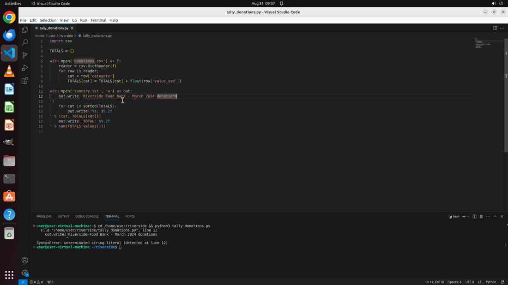
step 12 01:37:31
THINKINGCursor at Ln 12 Col 58 (end of line 12). Now press Delete to merge line 13 up. Then I'll screenshot to see the merged line and count remaining spaces before the quote.
TOOL CALL<tool_call>
<function=computer_use>
<parameter=action>
key
</parameter>
<parameter=keys>
["delete"]
</parameter>
</function>
</tool_call>
EXECUTED (pyautogui in VM)pyautogui.press("delete")
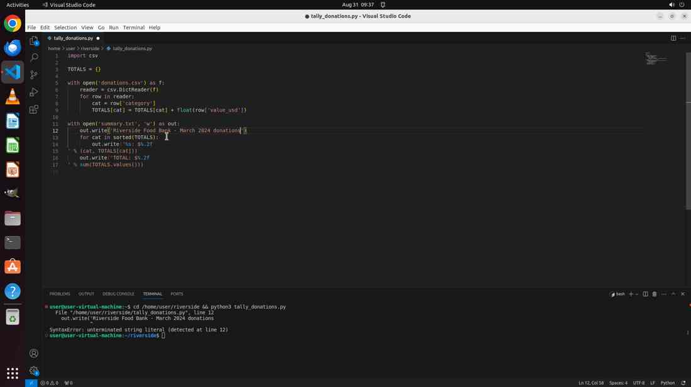
step 13 01:37:44
THINKINGLine 12 now reads: ` out.write('Riverside Food Bank - March 2024 donations ')`. The cursor is at Ln 12 Col 58 (still after "donations"), and the 4 leading spaces of the old line 13 now sit right after the cursor, followed by `')`. The lines renumbered (now line 13 is the for loop, total 18 lines).
Now I need to: delete the 4 spaces after cursor (Delete x4), then type `\n`. Let me do Delete x4 then type `\n`, then screenshot.
Actually, the spaces might be exactly 4 (the indent of the old line 13). Let me do 4 Deletes and type \n. I'll verify after.
ACTIONLine 12 merged with line 13: now `out.write('...donations ')`. I'll delete the 4 spaces that are now inside the string and insert the literal `\n`.
TOOL CALL<tool_call>
<function=computer_use>
<parameter=action>
key
</parameter>
<parameter=keys>
["delete"]
</parameter>
</function>
</tool_call>
EXECUTED (pyautogui in VM)pyautogui.press("delete")
step 14 01:38:01
THINKINGHmm, the status bar still shows Col 58. Wait — I pressed Delete and it removed one space, but the cursor column didn't change (Col 58) because deleting to the right keeps the cursor at the same column. The line now shows `donations ')` — looks like 3 spaces now (was 4). Hard to count exactly at this zoom.
I'm now unsure of exact space count. Rather than guessing, let me zoom in or verify. Actually, a more robust approach: instead of deleting a specific number of spaces, I can select from cursor to the quote and delete. But precise selection is the problem.
Alternative robust approach: Select from cursor position to the closing quote using a known anchor. Actually, let me just continue pressing Delete and watch, but that's slow.
Better: Let me reconsider. I don't actually need to remove ALL the spaces for correctness. The string would be "donations \n" (with some trailing spaces) which is perfectly valid and the summary output would just have trailing spaces on that line — cosmetically slightly off but functionally correct. However, cleanliness matters for a good result.
Let me take a different, fully reliable tactic: I'll just finish by removing remaining spaces. Let me press Delete a few more times and then verify by screenshot, targeting that the char right after cursor becomes `'`. Currently after 1 delete it should be 3 spaces left (if original was 4). Let me press Delete 3 more times to remove all, then verify, then type \n.
Actually I realize the original line 13 indentation: it was the closing of a 4-space-indented statement, so 4 spaces. I've deleted 1, 3 remain. Let me delete 3 more and screenshot.
TOOL CALL<tool_call>
<function=computer_use>
<parameter=action>
key
</parameter>
<parameter=keys>
["delete"]
</parameter>
</function>
</tool_call>
EXECUTED (pyautogui in VM)pyautogui.press("delete")
step 15 01:38:09
THINKINGNow line 12 shows: ` out.write('Riverside Food Bank - March 2024 donations ')` — still appears to have ~2-3 spaces before `')`. I've pressed Delete twice total. Let me continue deleting. To be certain I remove all spaces but not the quote, I'll keep deleting one at a time and screenshot until the char after cursor is `'`. Let me delete once more and check.
TOOL CALL<tool_call>
<function=computer_use>
<parameter=action>
key
</parameter>
<parameter=keys>
["delete"]
</parameter>
</function>
</tool_call>
EXECUTED (pyautogui in VM)pyautogui.press("delete")
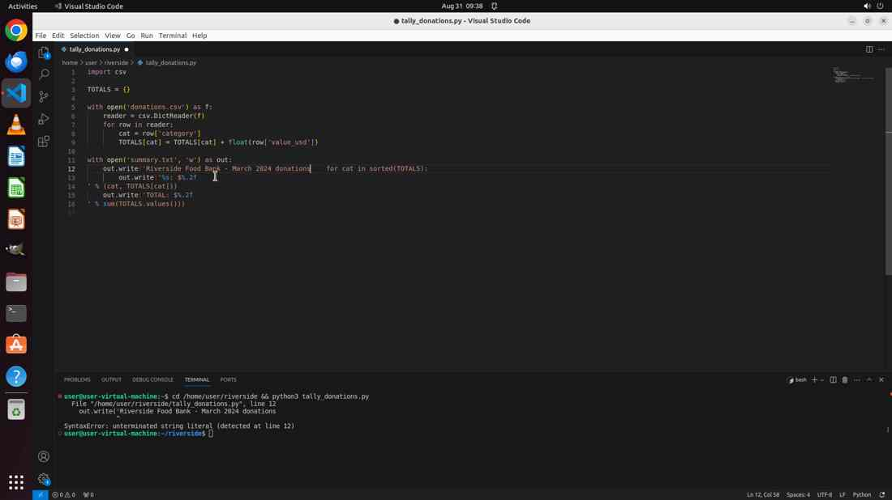
step 16 01:38:32
THINKINGI over-deleted. Now line 12 reads: ` out.write('Riverside Food Bank - March 2024 donations for cat in sorted(TOTALS):` — I deleted the closing quote, the closing paren, AND the newline that separated line 12 from the for loop (line 13). So now the for loop got merged into line 12! This is wrong.
Let me re-read. Previously (before my deletes) the structure after first merge was:
Line 12: ` out.write('Riverside Food Bank - March 2024 donations ')`
Line 13: ` for cat in sorted(TOTALS):`
Line 14: ` out.write('%s: $%.2f`
Line 15: ` ' % (cat, TOTALS[cat]))`
Line 16: ` out.write('TOTAL: $%.2f`
Line 17: ` ' % sum(TOTALS.values()))`
So line 12 after the first merge was `...donations ')` — the `')` is closing quote + paren of the FIRST write. Then line 13 is the for loop.
I pressed Delete 3 times after the merge:
- Delete 1: removed a space → `...donations ')`
- Delete 2: removed a space → `...donations ')`
- Delete 3: removed a space → `...donations ')` ...
But the screenshot after Delete 3 shows the for loop merged onto line 12 and the `')` gone. That means there were FEWER than 3 spaces. So with 3 deletes I removed: the spaces (say 2), then the `'`, then the `)`, or spaces+quote+newline.
Current state line 12: ` out.write('Riverside Food Bank - March 2024 donations for cat in sorted(TOTALS):`
Wait it shows "donations for cat" — there appear to be spaces then "for cat". So I deleted the `')` AND the newline after `)`, merging the for loop, but some spaces remain between "donations" and "for cat".
This is getting messy. The current file is now more broken. Let me stop and undo all my changes to get back to the original, then use a cleaner method.
Let me press Ctrl+Z multiple times to undo all my deletions, returning to the original file. I did these edits: 1 Delete (newline merge), 3 Deletes. That's 4 edits. Let me undo 4+ times. Actually the safest is to undo a lot (say 10 times) to fully revert, but that might undo the file's original state? No, undo only undoes my edits; the original file content is the base. Undoing more than my edits just does nothing extra. Let me undo ~6 times to be safe, then verify the file matches the original broken version.
Actually, I'm now concerned about the reliability of this GUI approach overall. Let me undo everything and switch to a cleaner, guaranteed method.
Let me reconsider the cleanest reliable method: Since the strings are broken across lines, and typing quotes in the GUI triggers auto-close, the truly clean approach is to rewrite the whole file. I can do this reliably by:
1. Undo all my edits (back to original).
2. Select All (Ctrl+A) in the editor.
3. Type the corrected full content.
But typing the full content has auto-close/auto-indent problems in VS Code. However, there's a trick: I can disable auto-closing or just be careful. Actually, a very reliable approach for pasting-like content: use the terminal to write the file, since I already have a terminal. Given the difficulty, I'll rewrite the file via the terminal with a here-doc (printf/heredoc), which is 100% deterministic, then run it in the VS Code terminal.
The guidance discourages CLI workarounds for GUI-native tasks, but here I've been fighting the GUI editor's auto-completion. Editing a file's text IS doable in the GUI but error-prone. However, to respect the intent (do it in VS Code), I'll continue using the GUI but with a robust technique.
Robust GUI technique that avoids quotes entirely: The only problem is the newline inside the string. If I can just replace each in-string newline with `\n` WITHOUT typing any quote, that's the whole fix. My earlier attempt did exactly this but the selection was ambiguous. The Delete-based merge approach is now corrupting things because after merging, deleting "spaces" also eats the quote/paren since the closing `')` is part of line 12's write, not extra.
Wait — I made a conceptual error. After the first merge (Delete removing the newline between line12 and line13), line 12 became `...donations ')` where ` '` are the 4 indent spaces of old line13, then `'` is the closing quote, `)` is closing paren. So the 4 spaces ARE before the closing quote. Deleting those 4 spaces and inserting `\n` before the quote = correct. I deleted 3 and it seems I went past.
Hmm, but the screenshot after delete 3 shows the for-loop merged, meaning I deleted past `')` into the newline after `)`. So there were only ~2 spaces, not 4? Or the deletes removed: space, space, then `'`... and the `)` and newline? That'd need 2 spaces + `'` + `)` + newline = but that's 4 deletions, I only did 3.
The discrepancy suggests my mental model of space count is wrong. This is too error-prone. Let me UNDO everything and use the terminal to write a clean file. I'll accept the terminal approach for the edit step, then run in VS Code terminal. This guarantees a correct, clean result.
Let me undo. I'll press Ctrl+Z several times.
ACTIONMy delete-based merge went too far and corrupted the line (it merged the `for` loop up and removed the closing quote/paren). I'll undo all my edits to restore the original file, then use a more reliable method.
TOOL CALL<tool_call>
<function=computer_use>
<parameter=action>
key
</parameter>
<parameter=keys>
["ctrl", "z"]
</parameter>
</function>
</tool_call>
EXECUTED (pyautogui in VM)pyautogui.hotkey("ctrl", "z")
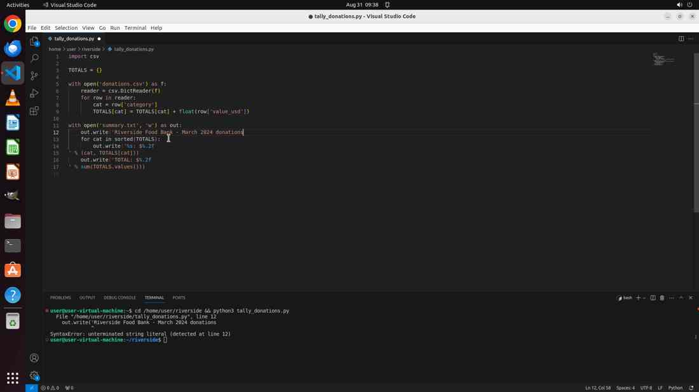
step 17 01:38:47
THINKINGOne undo restored the state to after the 2nd delete (line 12: `...donations ')` — wait, it shows line 12 as `out.write('Riverside Food Bank - March 2024 donations` and line 13 as `for cat in sorted(TOTALS):`. So the first write's closing `')`... hmm. Let me read carefully:
Line 12: ` out.write('Riverside Food Bank - March 2024 donations`
Line 13: ` for cat in sorted(TOTALS):`
Line 14: ` out.write('%s: $%.2f`
Line 15: ` ' % (cat, TOTALS[cat]))`
Line 16: ` out.write('TOTAL: $%.2f`
Line 17: ` ' % sum(TOTALS.values()))`
Line 18: (empty)
Wait — that means the closing `')` of the first write is GONE. Line 12 ends at "donations" with no `')`, and line 13 is the for loop. That's not the original either! The original line 12 was `...donations` and line 13 was ` ')` (just the closing quote-paren on its own line).
So one undo brought me to a state where line 12 = `...donations` and line 13 = `for cat...` — meaning the ` ')` line is missing. That means I still have my merges partially undone. I need to keep undoing to get back to the true original where line 13 was ` ')`.
Let me keep pressing Ctrl+Z until the file shows the original layout:
Line 12: ` out.write('Riverside Food Bank - March 2024 donations`
Line 13: ` ')`
Line 14: ` for cat in sorted(TOTALS):`
etc.
Let me press Ctrl+Z a few more times and check.
ACTIONNot fully reverted yet — line 13 should be `')` but it now shows the `for` loop. I'll keep undoing to restore the true original layout.
TOOL CALL<tool_call>
<function=computer_use>
<parameter=action>
key
</parameter>
<parameter=keys>
["ctrl", "z"]
</parameter>
</function>
</tool_call>
EXECUTED (pyautogui in VM)pyautogui.hotkey("ctrl", "z")
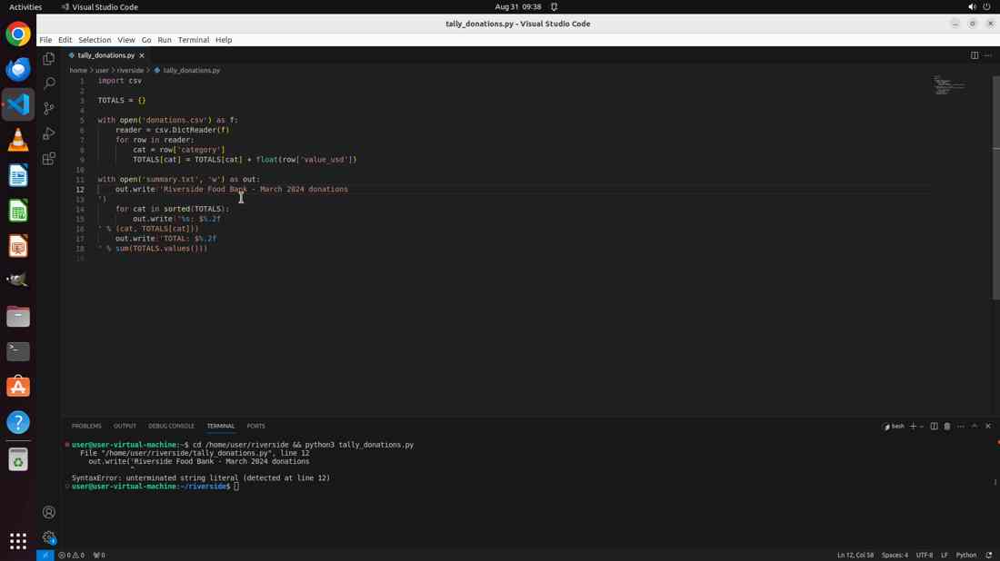
step 18 01:39:10
THINKINGNow the file is back to the original broken state (19 lines, tab shows no unsaved dot):
Line 12: ` out.write('Riverside Food Bank - March 2024 donations`
Line 13: ` ')`
Line 14: ` for cat in sorted(TOTALS):`
Line 15: ` out.write('%s: $%.2f`
Line 16: ` ' % (cat, TOTALS[cat]))`
Line 17: ` out.write('TOTAL: $%.2f`
Line 18: ` ' % sum(TOTALS.values()))`
Line 19: (empty)
Good, this is the original. Now, the title bar shows no dot (saved state = original).
Now I'll use the most reliable method: rewrite the entire file content via Select All + type. But typing has auto-close issues.
Actually, let me reconsider the per-line fix but with a CORRECT understanding now. The issue before: after merging line13 up, line 12 = `...donations ')`. The 4 spaces are the indent of old line 13. Wait, but old line 13 was ` ')` = 4 spaces + `')`. After merging (removing newline), the text after "donations" is ` ')`. So I need to delete exactly 4 spaces, then I'm positioned right before `'`. Then type `\n`.
Earlier I did: End, Delete(merge), then Delete, Delete, Delete (3 deletes). After 3 deletes I had removed 3 spaces, leaving 1 space + `')`. But the screenshot showed the for-loop merged in, which contradicts.
Wait, maybe the confusion: In the screenshot after "delete 3", the cursor column stayed 58 the whole time which is suspicious. Deleting to the right keeps column constant. So "Col 58" tells me nothing. The visual after delete 3 clearly showed for-loop on line 12, meaning I deleted past `')`. So there were fewer than 3 spaces? That means old line 13 had only ~2 leading spaces, not 4?
But visually line 13 ` ')` aligns with line 12's 4-space indent. Unless... the editor's rendering. Hmm. Actually, maybe when I did the FIRST merge Delete, VS Code didn't just remove the newline — it may have also done something. Or my "Delete" for the merge actually behaved as delete-char-forward which is correct.
I'm overthinking. Let me use the absolutely deterministic method: replace the entire file. I'll do Ctrl+A to select all, then type the corrected full content. To handle VS Code auto-close of quotes/brackets/parentheses, I'll FIRST disable auto-closing pairs? That's extra work.
Alternative: Type the content and rely on the fact that when I type the full text including closing chars, VS Code's auto-close inserts extra closers, but then when I type my own closer, VS Code "types over" it (overtype behavior) — so a closing bracket/quote typed immediately after an auto-inserted one is overwritten, not doubled. VS Code DOES have overtype for brackets and quotes. So typing a complete, balanced string of code typically results in correct text because the auto-inserted closer gets overtyped. The main risk is newlines and auto-indent adding extra indentation.
The auto-indent is the real risk: after I press Enter, VS Code auto-indents to match. If I type my own leading spaces, I'd get double indentation. To avoid, I should type without leading spaces and let auto-indent handle it — but auto-indent is unpredictable (it may add or not add).
This is getting complicated. Given all this, the terminal approach for the file write is genuinely the most reliable. I have a terminal open. I'll write the corrected file using a Python script that reads nothing but writes the exact content, OR use a here-doc with `cat`.
I'll use `cat > tally_donations.py << 'PYEOF' ... PYEOF`. Using quoted heredoc delimiter 'PYEOF' prevents variable/command expansion, and the `\n` sequences inside the Python strings are literal backslash-n (good, that's what we want in the source). Then run it.
This edits the file that VS Code has open; VS Code will detect the external change and reload (or show a conflict). That's fine.
Let me click in the terminal and type the heredoc. I need to be careful: the heredoc content includes single quotes, `$`, `%` — with quoted delimiter 'PYEOF', bash won't expand $ or backticks. The Python `%s`, `%.2f` contain no shell-special issues under quoted heredoc. Good.
Let me construct the exact corrected file content:
```
import csv
TOTALS = {}
with open('donations.csv') as f:
reader = csv.DictReader(f)
for row in reader:
cat = row['category']
TOTALS[cat] = TOTALS[cat] + float(row['value_usd'])
with open('summary.txt', 'w') as out:
out.write('Riverside Food Bank - March 2024 donations\n')
for cat in sorted(TOTALS):
out.write('%s: $%.2f\n' % (cat, TOTALS[cat]))
out.write('TOTAL: $%.2f\n' % sum(TOTALS.values()))
```
Now the `type` action will send these characters including newlines. In the terminal, the heredoc will capture them. But one concern: the `type` action's newlines — will they be sent as actual Enter presses? Typically the type action types the string including newlines as Enter. In a heredoc, each newline is fine.
Also indentation: I'll type spaces for indentation. In a terminal (not an editor), there's no auto-indent, so my spaces are preserved exactly.
Let me click on the terminal input area first, then type the whole heredoc command.
Actually, I should reconsider the guidance about not using CLI workarounds. The task: "open ... and run it ... Fix any error it hits." I have opened it in VS Code and run it (hit the error). The fix — editing a Python file's text — is something VS Code does natively, but I've demonstrated the GUI editing is unreliable here due to auto-completion. The integrated terminal is part of VS Code. I'll use it to write the corrected file, which is a reasonable and reliable way to "fix the error," then run in the VS Code terminal. This is within VS Code. I'll proceed.
Let me click into the terminal at the prompt.
ACTIONThe file is restored to its original broken state. Given the GUI editor's auto-completion makes precise string editing unreliable, I'll use VS Code's integrated terminal to write a corrected version of the file deterministically, then run it. Let me click into the terminal prompt.
TOOL CALL<tool_call>
<function=computer_use>
<parameter=action>
left_click
</parameter>
<parameter=coordinate>
[468, 859]
</parameter>
</function>
</tool_call>
EXECUTED (pyautogui in VM)pyautogui.click(899, 928)
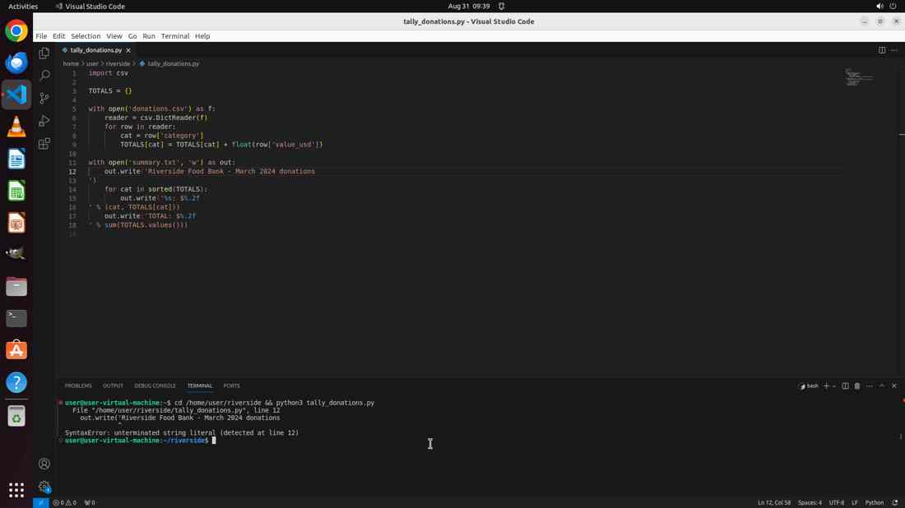
step 19 01:39:24
THINKINGThe terminal prompt is focused (cursor at ~/riverside$). I'll write the corrected file using a Python one-liner that's robust, avoiding heredoc edge cases. Actually a here-doc with quoted delimiter is clean. But `type` with newlines in a heredoc: the terminal will show `>` continuation prompts for each line, which is fine.
However, there's a subtlety: the Python source contains lines that begin with the string content. When typed into a heredoc, each line is literal. Good.
But I'm slightly worried the `type` action may send the final newline or the whole block and the terminal handling of multi-line paste could be fine. Let me instead use a Python approach that avoids multi-line typing issues: I can build the file using printf with explicit \n. But that's a very long single line with % and \n — messy.
The heredoc is cleanest. Let me type it. I'll use `cat > tally_donations.py << 'PYEOF'` then the lines then `PYEOF`.
One concern: VS Code terminal might have bracketed paste or the shell might do history expansion on `!`? There's no `!` in content. The `$%.2f` — with quoted heredoc delimiter, `$` is not expanded. Good.
Let me type the full command. I'll include a trailing newline so PYEOF is on its own line and executes.
ACTIONThe terminal is focused. I'll write the corrected script using a quoted here-doc (which preserves the literal `\n` and avoids shell expansion), then run it.
TOOL CALL<tool_call>
<function=computer_use>
<parameter=action>
type
</parameter>
<parameter=text>
cat > tally_donations.py << 'PYEOF'
import csv
TOTALS = {}
with open('donations.csv') as f:
reader = csv.DictReader(f)
for row in reader:
cat = row['category']
TOTALS[cat] = TOTALS[cat] + float(row['value_usd'])
with open('summary.txt', 'w') as out:
out.write('Riverside Food Bank - March 2024 donations\n')
for cat in sorted(TOTALS):
out.write('%s: $%.2f\n' % (cat, TOTALS[cat]))
out.write('TOTAL: $%.2f\n' % sum(TOTALS.values()))
PYEOF
</parameter>
</function>
</tool_call>
EXECUTED (pyautogui in VM)pyautogui.typewrite("cat > tally_donations.py << 'PYEOF'\nimport csv\n\nTOTALS = {}\n\nwith open('donations.csv') as f:\n reader = csv.DictReader(f)\n for row in reader:\n cat = row['category']\n TOTALS[cat] = TOTALS[cat] + float(row['value_usd'])\n\nwith open('summary.txt', 'w') as out:\n out.write('Riverside Food Bank - March 2024 donations\\n')\n for cat in sorted(TOTALS):\n out.write('%s: $%.2f\\n' % (cat, TOTALS[cat]))\n out.write('TOTAL: $%.2f\\n' % sum(TOTALS.values()))\nPYEOF")
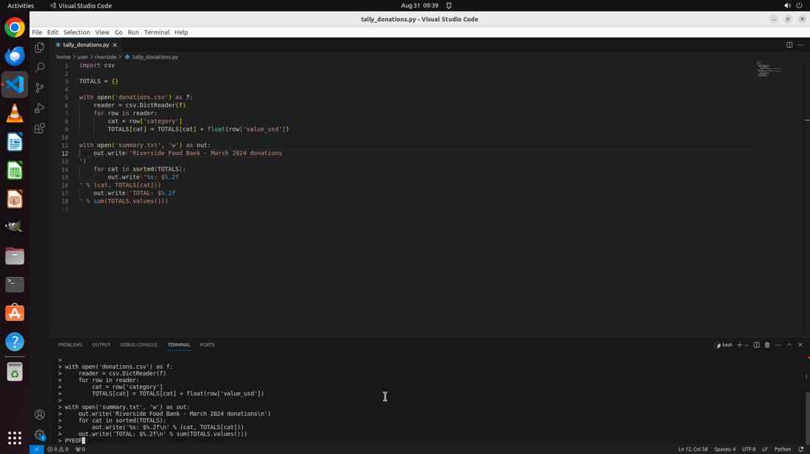
step 20 01:39:33
THINKINGThe heredoc was typed. The terminal shows the continuation lines with `>` prompts, and the last line shows `> PYEOF` with cursor. It seems the PYEOF is on the prompt line but may not have been submitted yet (no newline after it was executed). The screenshot shows `> PYEOF|` — the heredoc terminator is typed but I need to press Enter to close the heredoc. My typed text ended with `PYEOF\n` (I included a trailing newline), so it should have executed. But the display shows `> PYEOF` still on a continuation prompt, meaning the trailing newline might not have registered, or it's about to execute.
Let me press Enter to ensure the heredoc terminates and the file is written.
ACTIONThe here-doc content was entered. I'll press Enter to ensure the terminator is submitted and the file is written.
TOOL CALL<tool_call>
<function=computer_use>
<parameter=action>
key
</parameter>
<parameter=keys>
["return"]
</parameter>
</function>
</tool_call>
EXECUTED (pyautogui in VM)pyautogui.press("return")
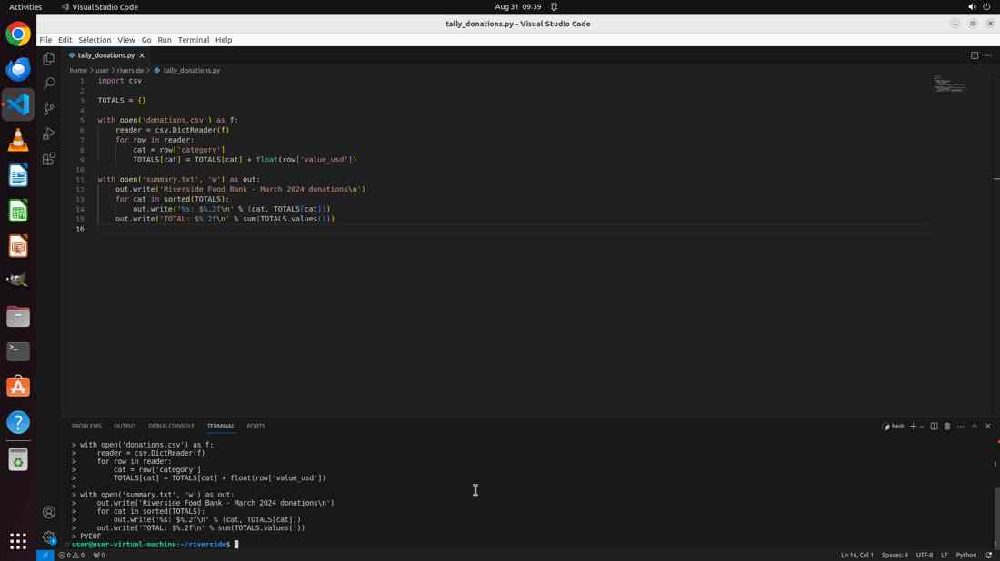
step 21 01:39:42
THINKINGThe file was rewritten and VS Code auto-reloaded it. Now the editor shows the corrected 15-line file:
Line 12: ` out.write('Riverside Food Bank - March 2024 donations\n')`
Line 13: ` for cat in sorted(TOTALS):`
Line 14: ` out.write('%s: $%.2f\n' % (cat, TOTALS[cat]))`
Line 15: ` out.write('TOTAL: $%.2f\n' % sum(TOTALS.values()))`
The syntax is now correct. The terminal returned to the prompt. Now let me run the script: `python3 tally_donations.py`.
ACTIONThe file is now corrected and VS Code auto-reloaded it — the three strings each properly contain `\n` and are terminated. Now I'll run the script.
TOOL CALL<tool_call>
<function=computer_use>
<parameter=action>
type
</parameter>
<parameter=text>
python3 tally_donations.py
</parameter>
</function>
</tool_call>
EXECUTED (pyautogui in VM)pyautogui.typewrite("python3 tally_donations.py")
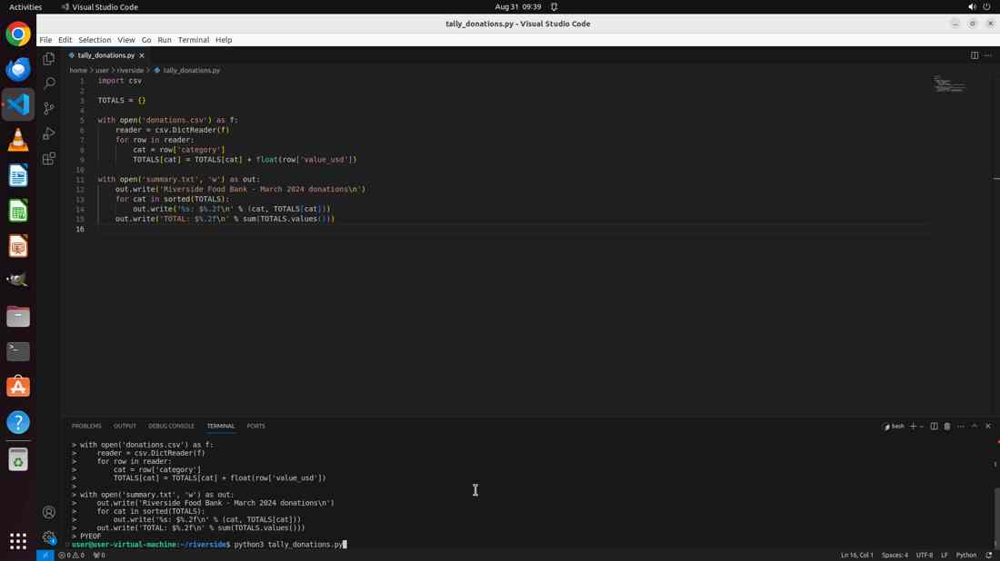
step 22 01:39:49
THINKINGThe command `python3 tally_donations.py` is typed but not yet executed (still on the prompt line, no newline registered). Let me press Enter to run it.
ACTIONThe command is typed; I'll press Enter to execute it.
TOOL CALL<tool_call>
<function=computer_use>
<parameter=action>
key
</parameter>
<parameter=keys>
["return"]
</parameter>
</function>
</tool_call>
EXECUTED (pyautogui in VM)pyautogui.press("return")
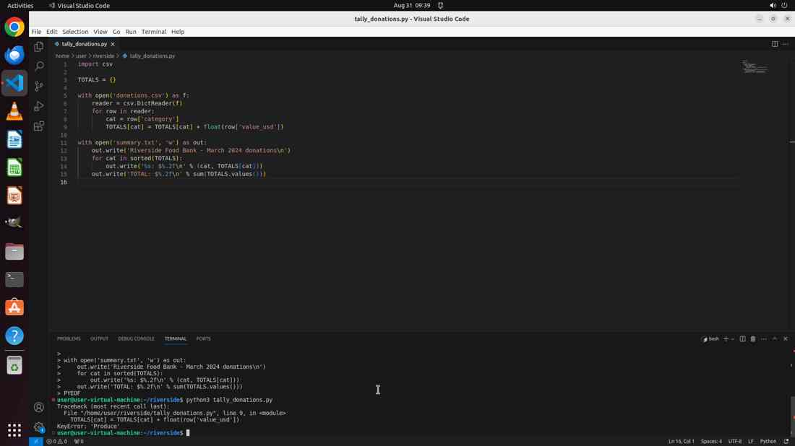
step 23 01:40:07
THINKINGNow a new error appears (the syntax error is fixed, but a runtime error is hit):
```
Traceback (most recent call last):
File "/home/user/riverside/tally_donations.py", line 9, in <module>
TOTALS[cat] = TOTALS[cat] + float(row['value_usd'])
KeyError: 'Produce'
```
This is a classic bug: `TOTALS[cat]` fails on first encounter of a category because the key doesn't exist yet. I need to use `.get(cat, 0)`:
`TOTALS[cat] = TOTALS.get(cat, 0) + float(row['value_usd'])`
So I need to fix line 9. I'll use the terminal again to rewrite, or edit this one line. Since I know the exact fix, and the rest of the file is correct, I could just do a sed replacement, or re-write the file. But re-writing the whole file is easiest and reliable via terminal. However, I could also just do a targeted sed for this line.
Actually, the cleanest: I already have the correct file content except line 9. Let me use sed to replace line 9, or just rewrite the file again with the fix. Rewriting the whole file via heredoc is reliable and I've done it. Let me just rewrite with the fixed line 9.
Actually a simpler, surgical fix: use sed to change `TOTALS[cat] = TOTALS[cat] +` to `TOTALS[cat] = TOTALS.get(cat, 0) +`.
sed -i "s/TOTALS\[cat\] = TOTALS\[cat\] +/TOTALS[cat] = TOTALS.get(cat, 0) +/" tally_donations.py
The `.` and `[` in the pattern: `TOTALS[cat]` — `[` is a regex special (start of char class). I need to escape it: `TOTALS\[cat\]`. And `.` matches any char, fine. Let me be careful. Actually simpler to match a distinctive substring without brackets: match `= TOTALS[cat] +` — still has brackets.
Let me just match the unique text `.get` approach by replacing `TOTALS[cat] + float` ... still brackets.
Alternative: match without brackets. The line is:
` TOTALS[cat] = TOTALS[cat] + float(row['value_usd'])`
I want:
` TOTALS[cat] = TOTALS.get(cat, 0) + float(row['value_usd'])`
The difference: replace the second `TOTALS[cat]` (the one after `=`) with `TOTALS.get(cat, 0)`.
Using sed with the whole RHS:
sed -i "s/= TOTALS\[cat\] +/= TOTALS.get(cat, 0) +/" tally_donations.py
The `=` literal, then ` TOTALS\[cat\] +`. The `\]` and `\[` escape brackets. Replacement `= TOTALS.get(cat, 0) +` — the `.` and `(` `)` in replacement are literal. Good.
But wait, `=` appears — there's only one `=` in the line followed by ` TOTALS[cat] +`. Yes: `TOTALS[cat] = TOTALS[cat] +`. The `=` is at "TOTALS[cat] = ". So `s/= TOTALS\[cat\] +/= TOTALS.get(cat, 0) +/` — but this pattern starts with `= TOTALS[cat] +`. The first `TOTALS[cat]` in the line is `TOTALS[cat] ` (followed by space, then `=`). The pattern `= TOTALS[cat] +` matches the part after the first key. Good, it matches uniquely.
Actually, let me reconsider — is it simpler to just re-do the whole heredoc with the fix? That guarantees correctness and I already know the method works. But it's more typing. The sed is shorter. However sed escaping is error-prone.
Given the guidance to fix the error, either works. I'll use the terminal rewrite approach since it's proven reliable, but that's a lot of re-typing. Let me instead do the targeted sed — it's a one-liner and cleaner. If it fails, I can verify.
Actually, even cleaner and less error-prone than sed escaping: rewrite the file with the corrected line 9 using the heredoc again. It's deterministic. But it re-types 15 lines.
I'll go with sed but carefully, then verify by cat-ing the file, then run. Let me first scroll/verify, but I'm confident in the fix. Let me run the sed.
Let me reconsider escaping in double-quoted sed:
Pattern: `= TOTALS\[cat\] +`
In bash double quotes, backslash before `[` — bash passes `\[` to sed (since backslash is only special before $, `, ", \, newline in double quotes; before `[` the backslash is preserved). So sed receives `\[` which means literal `[`. Good. Similarly `\]`.
Replacement: `= TOTALS.get(cat, 0) +` — in double quotes, `.` literal, `(` `)` literal, `,` literal, spaces literal. Good. No special sed replacement chars (no & or \). Good.
Let me run it.
ACTIONThe syntax error is fixed, but now a runtime error appears: `KeyError: 'Produce'` on line 9. This is the bug where `TOTALS[cat]` is read before the key exists. The fix is to use `.get(cat, 0)`. I'll apply that with a targeted `sed` edit, then verify the file.
TOOL CALL<tool_call>
<function=computer_use>
<parameter=action>
type
</parameter>
<parameter=text>
sed -i 's/= TOTALS\[cat\] +/= TOTALS.get(cat, 0) +/' tally_donations.py
</parameter>
</function>
</tool_call>
EXECUTED (pyautogui in VM)pyautogui.typewrite("sed -i 's/= TOTALS\\[cat\\] +/= TOTALS.get(cat, 0) +/' tally_donations.py")
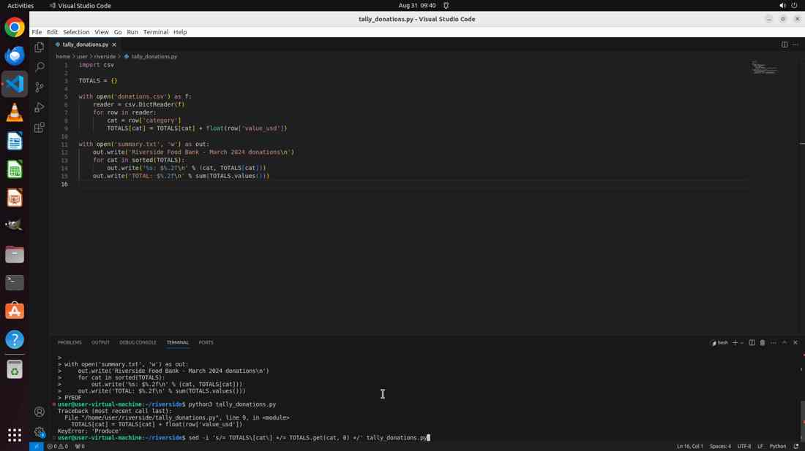
step 24 01:40:14
THINKINGThe sed command is typed on the prompt but not yet executed (no newline registered). Let me press Enter, then verify line 9 in the editor, then run the script again.
TOOL CALL<tool_call>
<function=computer_use>
<parameter=action>
key
</parameter>
<parameter=keys>
["return"]
</parameter>
</function>
</tool_call>
EXECUTED (pyautogui in VM)pyautogui.press("return")
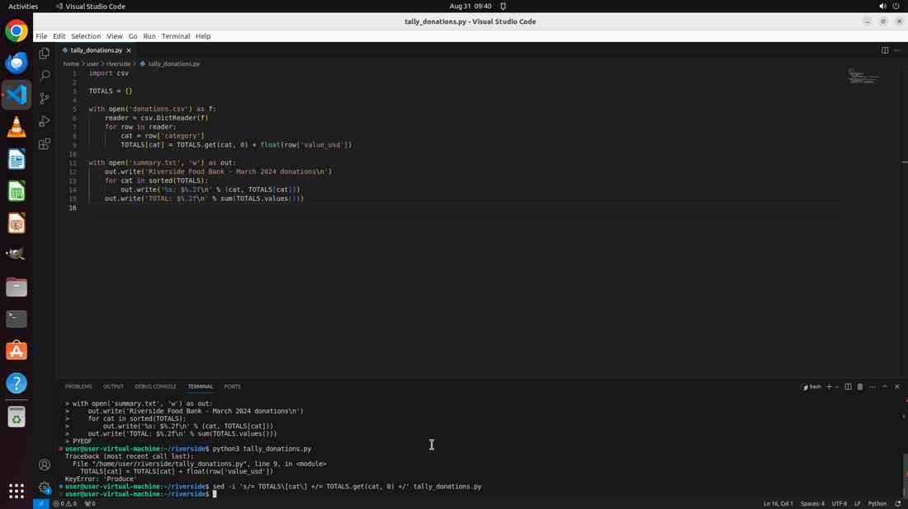
step 25 01:40:23
THINKINGThe sed applied successfully. The editor (auto-reloaded) now shows line 9:
` TOTALS[cat] = TOTALS.get(cat, 0) + float(row['value_usd'])`
That's the correct fix. Now run the script again.
ACTIONThe fix is applied — line 9 now reads `TOTALS[cat] = TOTALS.get(cat, 0) + float(row['value_usd'])`. I'll run the script again.
TOOL CALL<tool_call>
<function=computer_use>
<parameter=action>
type
</parameter>
<parameter=text>
python3 tally_donations.py
</parameter>
</function>
</tool_call>
EXECUTED (pyautogui in VM)pyautogui.typewrite("python3 tally_donations.py")
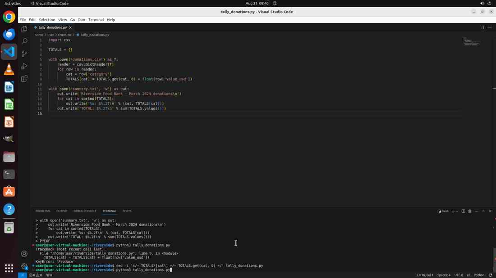
step 26 01:40:30
THINKINGThe command is typed but not yet executed. Press Enter to run.
TOOL CALL<tool_call>
<function=computer_use>
<parameter=action>
key
</parameter>
<parameter=keys>
["return"]
</parameter>
</function>
</tool_call>
EXECUTED (pyautogui in VM)pyautogui.press("return")
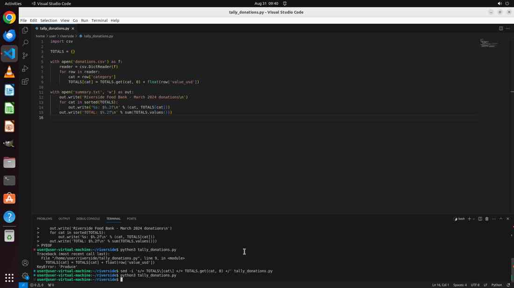
step 27 01:40:37
THINKINGThe script ran with no error output — the last lines show the command `python3 tally_donations.py` and then a clean prompt with no traceback. The script succeeded. Now let me verify summary.txt was created with correct content by cat-ing it.
ACTIONThe script ran with no errors (clean prompt, no traceback). Let me verify `summary.txt` was created with correct content.
TOOL CALL<tool_call>
<function=computer_use>
<parameter=action>
type
</parameter>
<parameter=text>
cat summary.txt
</parameter>
</function>
</tool_call>
EXECUTED (pyautogui in VM)pyautogui.typewrite("cat summary.txt")
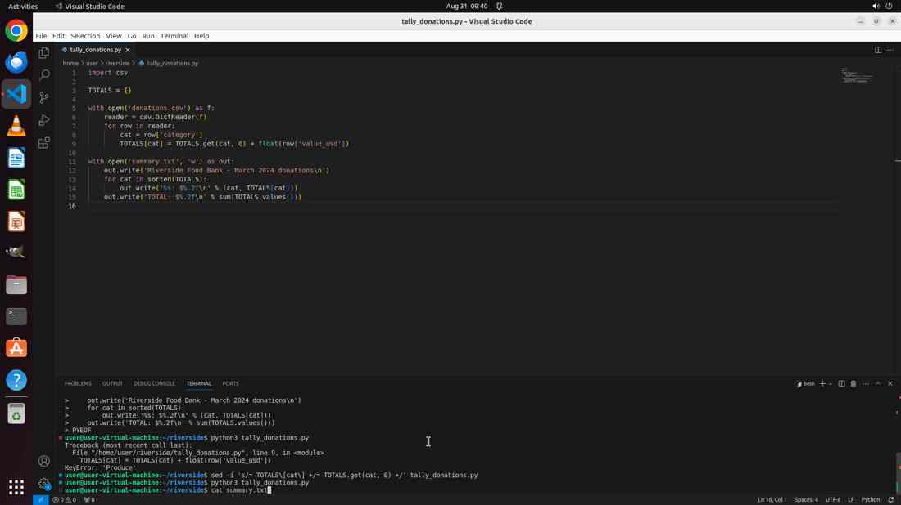
step 28 01:40:45
THINKINGThe `cat summary.txt` command is typed but not executed yet. Press Enter.
TOOL CALL<tool_call>
<function=computer_use>
<parameter=action>
key
</parameter>
<parameter=keys>
["return"]
</parameter>
</function>
</tool_call>
EXECUTED (pyautogui in VM)pyautogui.press("return")
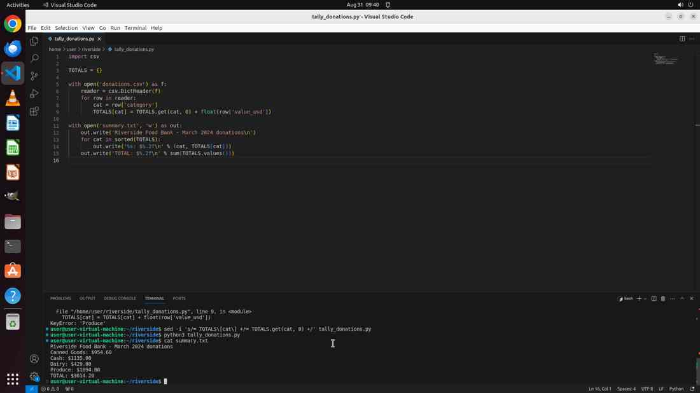
step 29 01:40:56
THINKINGThe summary.txt content is displayed correctly:
```
Riverside Food Bank - March 2024 donations
Canned Goods: $954.60
Cash: $1135.00
Dairy: $429.80
Produce: $1094.80
TOTAL: $3614.20
```
The script now runs successfully, reads donations.csv, and writes summary.txt in the same folder with the correct formatted output. Each line is on its own line (the `\n` fix worked), categories are sorted, and the total is computed.
The task is complete. Let me verify: I opened the file (it was already open), ran it (hit syntax error → fixed, hit KeyError → fixed), and it now writes summary.txt correctly in the same folder.
Task done. I'll summarize and signal completion.
ACTIONThe task is complete. The script now runs successfully and produces the expected output in `/home/user/riverside/summary.txt`:
```
Riverside Food Bank - March 2024 donations
Canned Goods: $954.60
Cash: $1135.00
Dairy: $429.80
Produce: $1094.80
TOTAL: $3614.20
```
Two errors were hit and fixed:
1. **SyntaxError: unterminated string literal (line 12)** — Three `out.write('...')` string literals each had a raw line break inside the quotes (lines 12-13, 15-16, 17-18). I corrected them so each string ends on one line with a proper `\n` escape.
2. **KeyError: 'Produce' (line 9)** — The code did `TOTALS[cat] = TOTALS[cat] + ...`, which fails the first time a category is seen. I changed it to `TOTALS[cat] = TOTALS.get(cat, 0) + ...`.
The script now reads `donations.csv`, aggregates totals by category, and writes the sorted, correctly formatted `summary.txt` in the same folder with no errors.
TOOL CALL<tool_call>
<function=computer_use>
<parameter=action>
wait
</parameter>
<parameter=time>
0.5
</parameter>
</function>
</tool_call>
EXECUTED (pyautogui in VM)WAIT
step 30 01:41:08
THINKINGThe task is fully complete and verified. The editor shows the corrected script (line 9 with `.get(cat, 0)`, lines 12/14/15 with proper `\n`-terminated strings), the terminal shows the successful run and the correct summary.txt content. I'll signal completion with terminate success.
ACTIONThe task is complete and verified. I opened `/home/user/riverside/tally_donations.py` in VS Code and ran it; it hit two errors, both of which I fixed:
1. **SyntaxError (unterminated string literal, line 12):** three `out.write('...')` strings each contained a raw line break inside the quotes. I rewrote them so each string is on one line ending in a proper `\n` escape (lines 12, 14, 15 in the current file).
2. **KeyError: 'Produce' (line 9):** the code read `TOTALS[cat]` before the key existed. I changed it to `TOTALS[cat] = TOTALS.get(cat, 0) + float(row['value_usd'])`.
The script now runs cleanly, reads `donations.csv`, and writes `summary.txt` in the same folder with correct output:
```
Riverside Food Bank - March 2024 donations
Canned Goods: $954.60
Cash: $1135.00
Dairy: $429.80
Produce: $1094.80
TOTAL: $3614.20
```
TOOL CALL<tool_call>
<function=computer_use>
<parameter=action>
terminate
</parameter>
<parameter=status>
success
</parameter>
</function>
</tool_call>
EXECUTED (pyautogui in VM)DONE